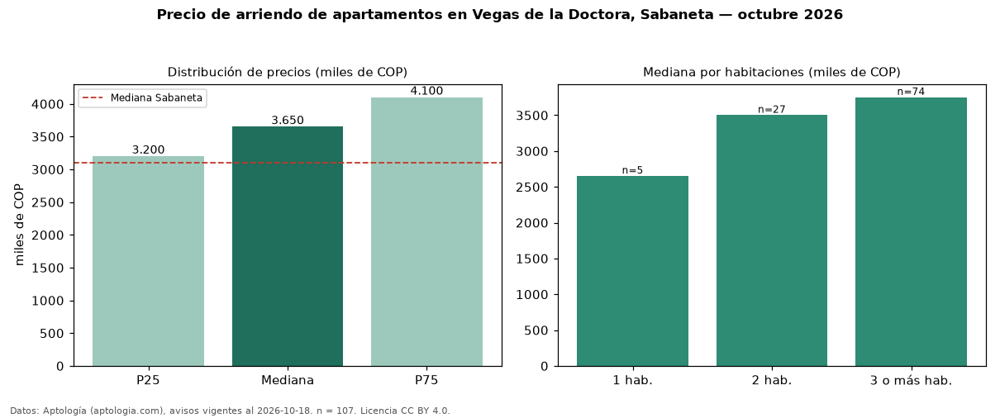

Precio de arriendo de apartamentos en Vegas de la Doctora, Sabaneta — octubre 2026
COP 3,65 millones al mes es el canon mediano de apartamentos en arriendo en Vegas de la Doctora, Sabaneta (n = 107 avisos). Frente a la mediana de Sabaneta para apartamentos (COP 3,10 millones), queda 18 % por encima. Por metro cuadrado, la mediana es COP 38.384/m² al mes (n = 107 avisos con área), 6 % por debajo de Sabaneta (COP 41.026/m²). Por precio mediano es el puesto 1 de 32 barrios de Sabaneta con al menos 30 avisos de apartamentos en arriendo (COP): entre las más caras. Con el precio por m² de venta del mismo segmento (COP 7,07 millones/m²), la rentabilidad bruta implícita es 6,5 % anual (aproximación con medianas de ofertas distintas). El área mediana anunciada es 97 m². El segmento con más oferta es el de 3 o más habitaciones (74 avisos, mediana COP 3,75 millones); pasar de 1 habitación a 3 o más habitaciones cambia la mediana +42 %. El estrato más frecuente es 4 (92 % de los avisos con estrato). Datos: Aptología (aptologia.com), CC BY 4.0 — https://www.aptologia.com/arriendo/sabaneta/vegas-de-la-doctora. Archivos: PDF, CSV con las cifras y gráfica PNG.

| Avisos únicos | 107 |
|---|---|
| Percentil 25 | COP 3.200.000 |
| Mediana | COP 3.650.000 |
| Percentil 75 | COP 4.100.000 |
| Mediana por m² | COP 38.383 |
Fuente: avisos vigentes de portales inmobiliarios recopilados por Aptología, deduplicados (mínimo 30 avisos únicos por celda). Precios pedidos, no cerrados. Fecha: 2026-10-18.